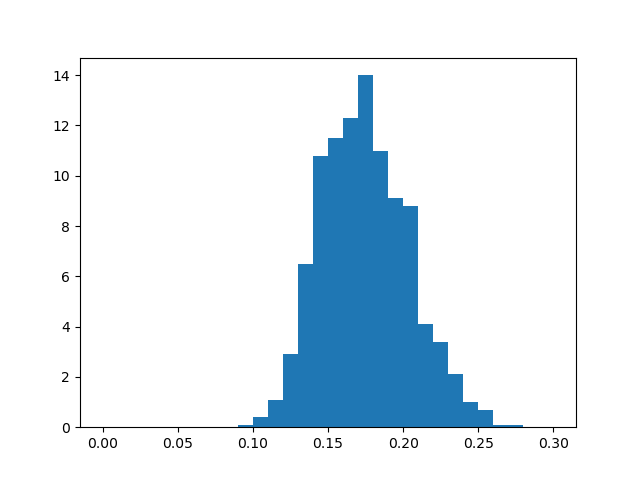
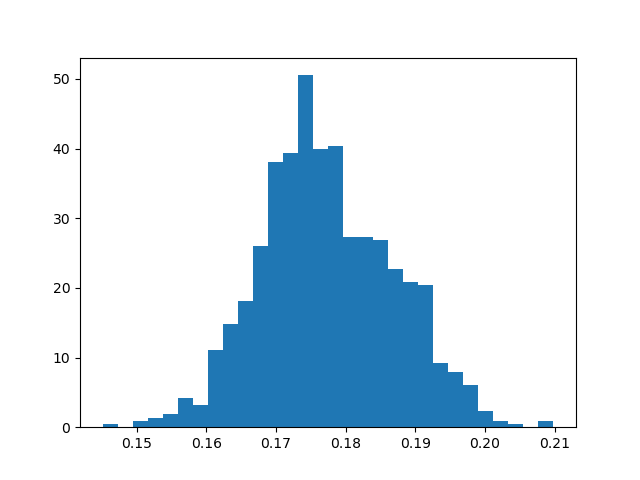
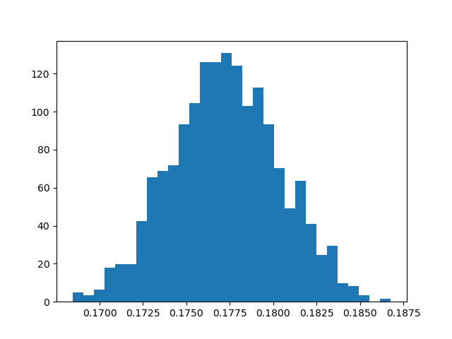
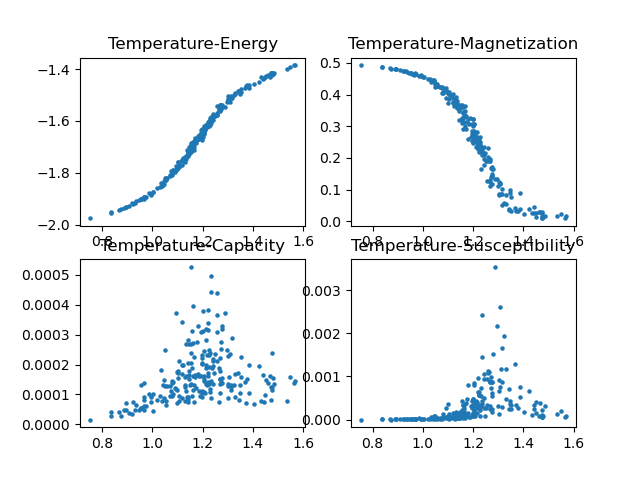

作业
解答
利用蒙特卡洛法求积分,
I=∫Df(x)dnx可在积分区域D内随机选取N个点x1,x2⋯xn,xi∈D.若选取得各个点概率是均匀的,则积分近似值为:
I≈NV(D)i=1∑nf(xi)
V(D)为区域D的体积.
每次取100个点,重复1000次,得到结果的频数分布直方图如下:

增加取点数到1000和10000,得到相应的频数分布直方图如下.可以看到,随着点数N增加,方差呈N1的趋势减小,平均值也更加精确.


取107个随机点,计算积分结果(见T1_2.py),得出结果为:1.317×10−7
真实值约为:0.177249≈1.73×10−7
利用Metropolis算法,过程如下:设系统处于各个态的概率分布为wi(t),转移矩阵设为两个因子之积:
W(j→i)=T(j→i)A(j→i)
根据转移矩阵性质,∑iW(j→i)=1.
其中T(j→i)为j态向i态转移的概率,满足∑iTji=1;A(j→i)为接受j→i的概率
于是态的演化为(为方便起见,下面记X(i→j)=Xij):
wi(t+1)=j∑[wj(t)TjiAji+wi(t)Tij(1−Aij)]wi(t+1)−wi(t)=j∑(Wjiwj−Wijwi)
平衡态要求Δwi(t)=0,即∑jwjWji=∑jwiWij=wi
为避免Markov过程中出现循环解,引入细致平衡:wjWji=wiWij
wjwi=WijWji=e−β(Ei−Ej)
其中用到了玻尔兹曼分布wi∝e−βEi,也是我们的目标分布.
从任意态A={s1s2⋯sn}开始,随机选取一个分子k,改变它的状态从而使系统态为B={s1′⋯sn′}.
定义态之间的距离为1-norm:∣∣A−B∣∣=∑k∣sk−sk′∣
计算能量ΔE=EA−EB,令接受概率为AAB ( 当 ∣∣A−B∣∣=1时 )为:
AAB={1,e−(EB−EA)/T,EA≤EBEA>EB
转移概率TAB可写为:
TAB=⎩⎨⎧0,#{B∣∣∣A−B∣∣=1}1,A=B or ∣∣A−B∣∣≥2∣∣A−B∣∣=1
其中#{B∣∣∣A−B∣∣=1}表示与态A距离为1的态个数
于是总的概率转移矩阵写为:
WAB=⎩⎨⎧#{B∣∣∣A−B∣∣=1}1,#{B∣∣∣A−B∣∣=1}1e−(EB−EA)/T,0,1−∑B′=AWAB′EB≤EA,∣∣A−B∣∣=1EB>EA,∣∣A−B∣∣=1∣∣A−B∣∣≥2,B=A
该模型的模拟程序见T2_.py。分别对10×10,40×40,80×80的格子进行模拟，得到的结果如下图所示：

40x40：

80x80:

热容作为内能对温度的导数，可以在图中看出在曲线转折点附近T≈1.2附近最大，这个转折点也对应了相变点。
Potts模型的哈密顿量可以写成：
E=2−J<kl>∑N2(δsl,sk−21)−<kl>∑N2J
因此相变温度在J/kB=1的条件下为2Tc=1.135
为了得到更精确的相变温度，对相变温度临近区间精密取点，由于在临界点附近达到热平衡速度很慢，因此增大统计步数到150万步，得到：

相变温度估计为Tc≈1.2左右，和实际相符
自变量温度改用高斯分布生成，得到散点图如下：

改变q的值为3,6,10，可能的能量差依然为：ΔE=4,2,0,−2,−4。分别模拟得到：
q=3:

此时估计相变在Tc=1.0∼1.1之间发生。
q=6:

相变温度Tc约为0.84
q=10:

相变温度Tc进一步降低，达到0.72
通过归纳可以得出，q值越大相变温度越低。